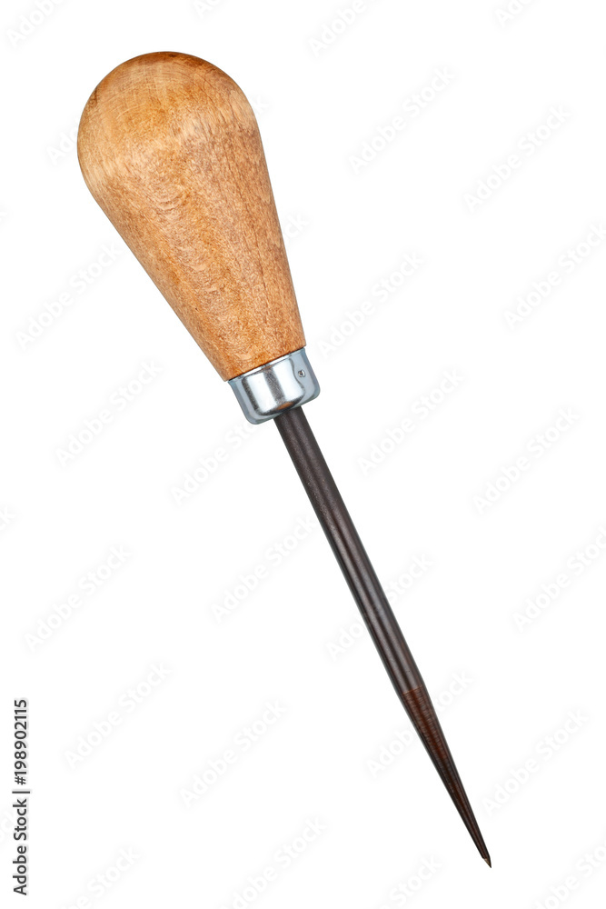
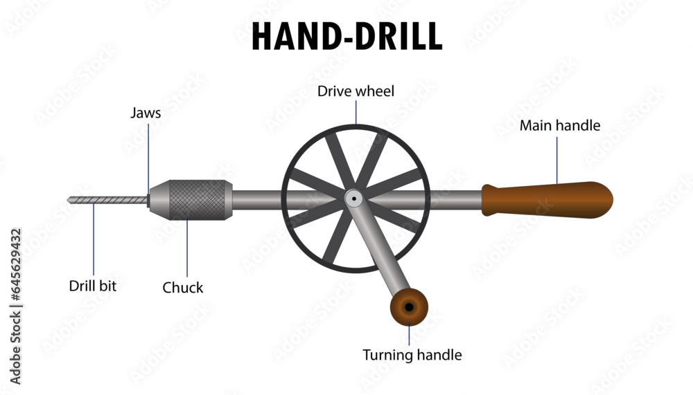

Hand Drill
A simple handheld drill with a chuck that holds smaller bits. You spin it by hand for light drilling tasks in wood, plastic, or soft materials. Imagine a small eggbeater you use for drilling.

A small, handheld tool with a pointed awl for making pilot holes for screws or nails. Think of it as a mini drill you push by hand.
A cranked device that holds various drill bits (like augers) for creating larger holes in wood. It offers more power and control than a hand drill. Imagine a T-shaped handle you crank to rotate a bigger drill bit.
A drill bit with a screw-like design that bores wide, clean holes in wood. Useful for tasks like installing doorknobs or running thick cables. Think of it as a corkscrew for wood.
A simple handheld drill with a chuck that holds smaller bits. You spin it by hand for light drilling tasks in wood, plastic, or soft materials. Imagine a small eggbeater you use for drilling.